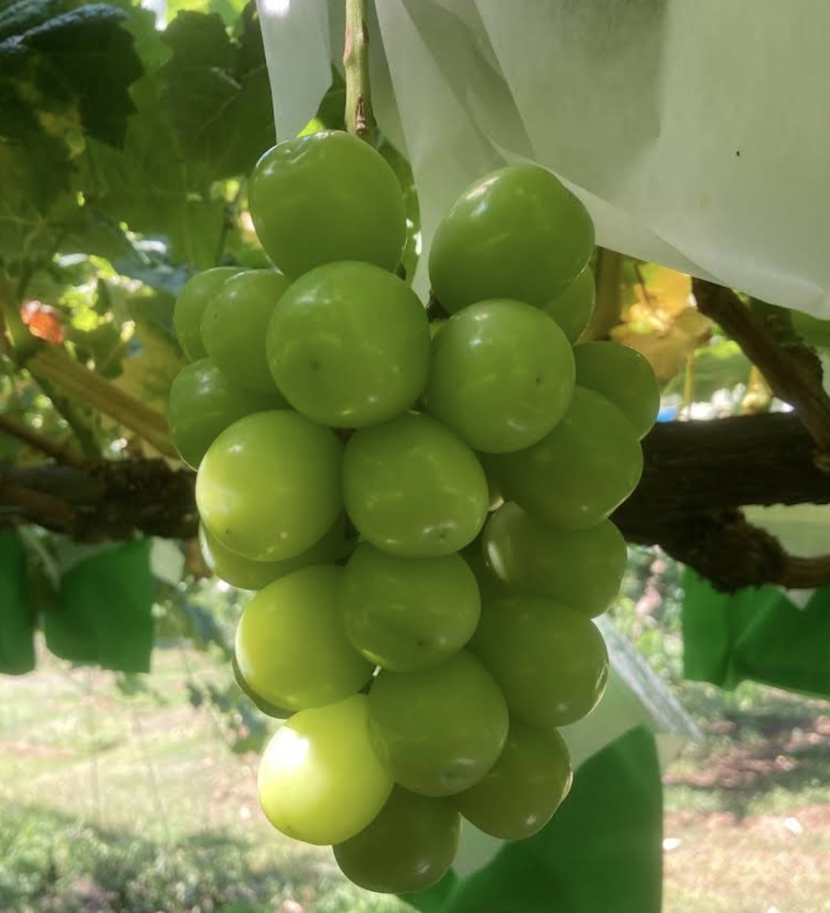
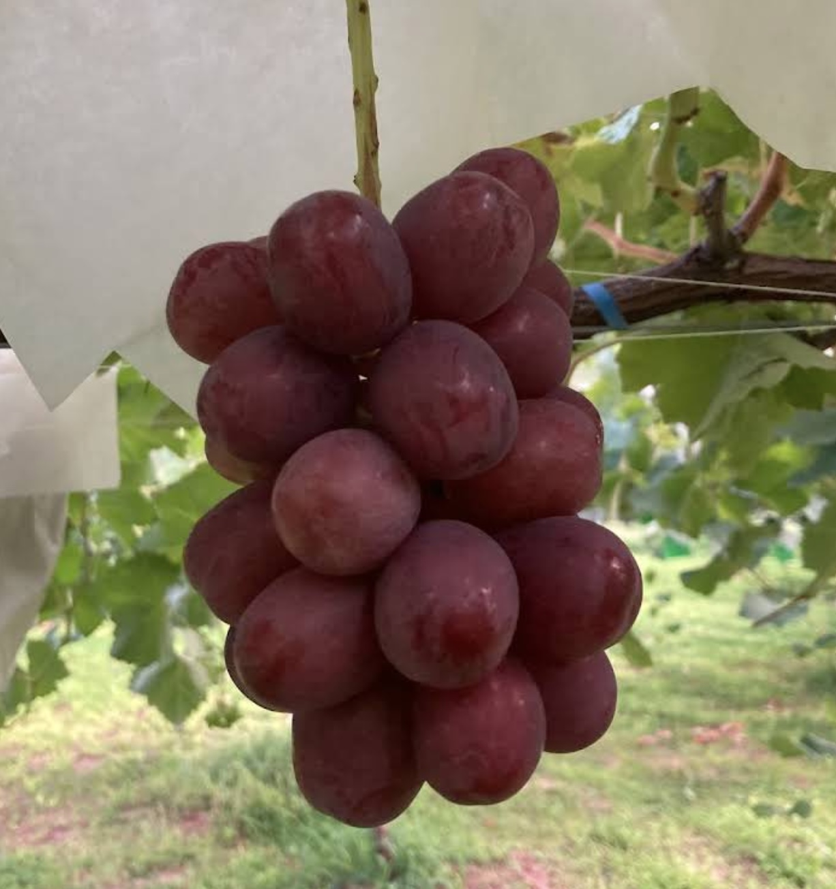
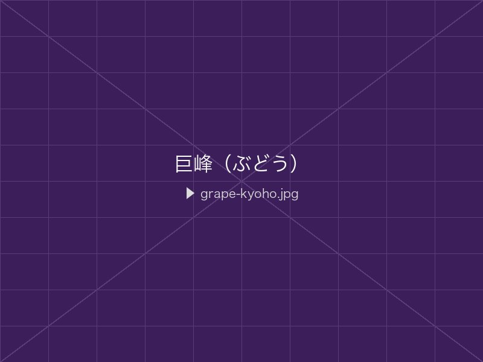
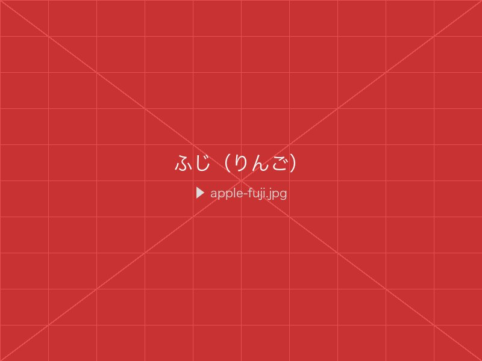
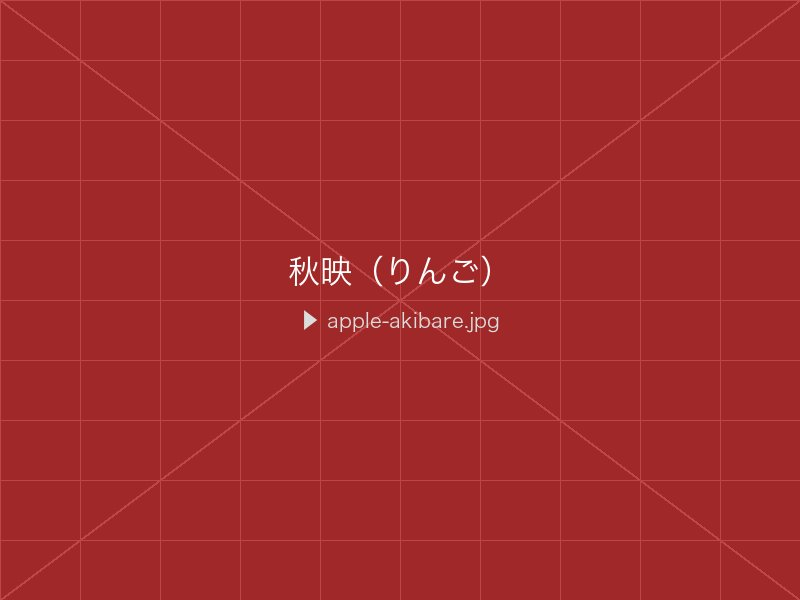
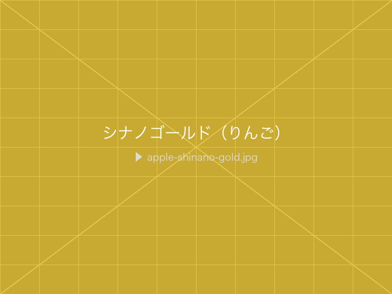

商品一覧
ご購入はBASEショップからお手続きいただけます。
各商品の「BASEで購入する」ボタンよりショップページへお進みください。

Grape
ぶどう
発送時期：8月〜10月山嵜農園のメイン商品。長野の大きな寒暖差が育む、 糖度の高いぶどうを複数品種栽培しています。 シャインマスカットをはじめ、長野県オリジナル品種など、 夏から秋にかけて順次収穫・発送いたします。
- 4品種を栽培・順次発送
- 高糖度・長野県産
- ご家庭用・贈答用を販売
- クール便でお届け
栽培品種

シャインマスカット
8月下旬〜9月皮ごと食べられる大粒の緑系品種。マスカット香が豊かで、糖度が高く上品な甘みが特徴。

ナガノパープル
9月長野県オリジナルの黒系品種。皮ごと食べられ、甘みが強く香り高い。ポリフェノールも豊富。

クイーンニーナ
9月〜10月鮮やかな赤色が美しい大粒品種。甘みと程よい酸味のバランスがよく、見た目にも華やか。

巨峰
9月〜10月定番の大粒黒系品種。ジューシーで豊かな甘みとコクが特徴。根強い人気を誇る定番品種。

Apple
りんご
発送時期：10月〜11月信州りんごは全国的にも高い評価を誇ります。 ふじ・秋映・シナノゴールドなど複数品種を栽培しており、 それぞれに異なる甘さ・酸味・食感をお楽しみいただけます。
- 3品種を栽培・順次発送
- 信州産・甘みと酸味のバランスが絶妙
- ご家庭用・贈答用を販売
- 長期保存可能（冷蔵）
栽培品種

ふじ
11月〜日本を代表するりんご。蜜入りが多く、甘みとみずみずしさが特徴。長期保存にも向く定番品種。

秋映
10月長野県オリジナル品種。濃い赤色が美しく、甘みの中に程よい酸味があり、濃厚な味わい。

シナノゴールド
10月〜11月長野県生まれの黄色いりんご。さわやかな酸味と甘みのバランスが絶妙。シャキッとした食感。

Cherry
さくらんぼ
発送時期：6月〜7月
信州の短い夏を告げる、さくらんぼ。
甘みと適度な酸味のバランスが美しく、
粒の大きさと美しい色合いが自慢です。
贈答用・ご家庭用ともに
ご用意しています。
- 甘みと酸味のバランスが絶妙
- 収穫後すぐに発送（鮮度重視）
- 贈答用化粧箱あり
- 数量限定・ご予約推奨

Persimmon
柿
発送時期：10月〜11月秋の実りを代表する柿。長野の澄んだ空気と 朝晩の冷え込みが、豊かな甘みを生み出します。 ジューシーで柔らかな果肉が特徴です。
- 甘柿・渋抜き柿など品種あり
- 秋の贈答品にも最適
- ご家庭用・贈答用を販売
- 常温便でお届け